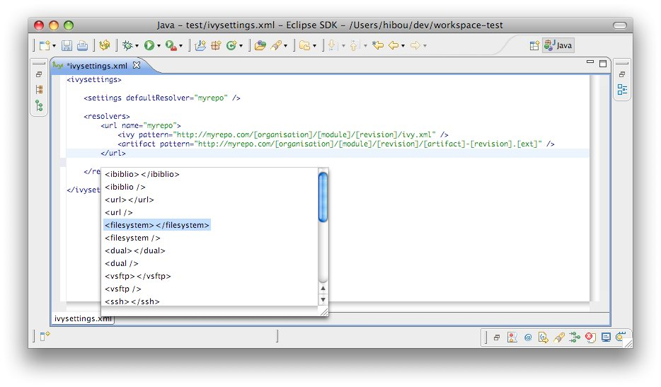

Ivy settings editor
IvyDE provides an editor of ivysettings.xml files. It provides completion on all tag and attribute names.

Available completions:
- XML structure: Allows you to quickly to insert valid tags in the right place. If the tag can have nested childrenm, both notations, simple tag and open tag, are proposed.
 - Tag attributes: When your cursor is placed inside a tag bracket, the completion shows available attributes for the enclosing tag.